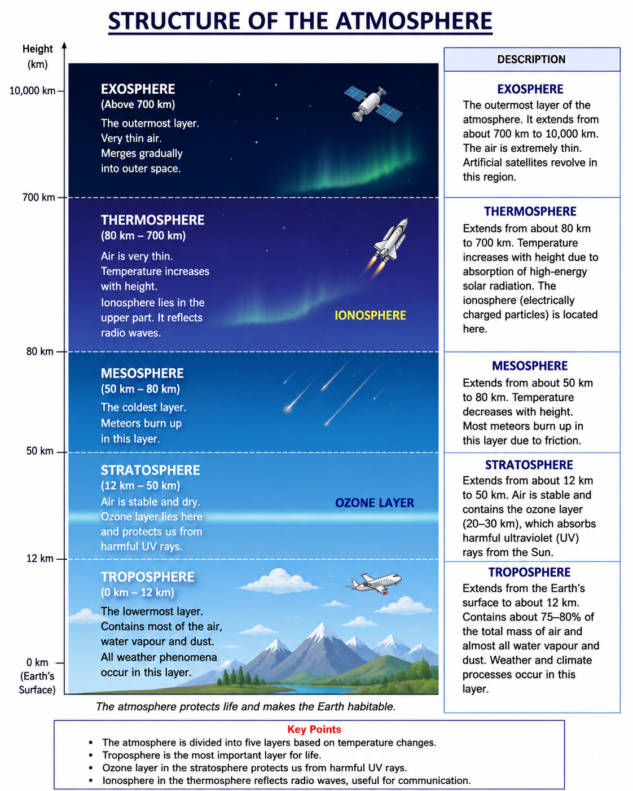

GEOGRAPHY- CLASS-11: FUNDAMENTALS OF PHYSICAL GEOGRAPHY
CHAPTER-7
Composition and Structure of Atmosphere
1. Multiple Choice Questions
(i) Which one of the following gases constitutes the major portion of the atmosphere?
Answer: (b) Nitrogen
Explanation: Nitrogen makes up about 78% of the Earth's atmosphere, making it the most abundant gas.
(ii) Atmospheric layer important for human beings is:
Answer: (c) Troposphere
Explanation: The troposphere contains most of the atmospheric gases, water vapour and weather phenomena, making it the most important layer for life.
(iii) Sea salt, pollen, ash, smoke, soot, fine soil — these are associated with:
Answer: (b) Dust particles
Explanation: Sea salt, pollen, ash, smoke, soot and fine soil are examples of dust particles suspended in the atmosphere.
(iv) Oxygen gas is in negligible quantity at the height of atmosphere:
Answer: (d) 150 km
Explanation: Oxygen becomes negligible at an altitude of about 150 km due to the extremely thin atmosphere.
(v) Which one of the following gases is transparent to incoming solar radiation and opaque to outgoing terrestrial radiation?
Answer: (d) Carbon dioxide
Explanation: Carbon dioxide is a greenhouse gas. It allows most incoming solar radiation to pass through but absorbs outgoing terrestrial (infrared) radiation.
2. Answer the following questions in about 30 words.
(i) What do you understand by atmosphere?
Answer:
The atmosphere is a blanket of gases surrounding the Earth. It is held by the Earth's gravity and protects life by providing oxygen, regulating temperature and shielding the Earth from harmful solar radiation.
(ii) What are the elements of weather and climate?
Answer:
The main elements of weather and climate are temperature, atmospheric pressure, wind, humidity, clouds, precipitation and sunshine. These elements determine the atmospheric conditions of a place.
(iii) Describe the composition of atmosphere.
Answer:
The atmosphere consists of about 78% nitrogen, 21% oxygen, 0.93% argon, 0.04% carbon dioxide, along with water vapour, dust particles and other gases in small quantities.
(iv) Why is troposphere the most important of all the layers of the atmosphere?
Answer:
The troposphere is the lowest atmospheric layer where humans live. It contains most of the air, water vapour and clouds, and all weather phenomena such as rainfall, storms and winds occur here.
3. Answer the following questions in about 150 words.
(i) Describe the composition of the atmosphere.
Answer:
The Earth's atmosphere is a mixture of gases, water vapour and dust particles. The major component is nitrogen (78%), which helps in plant growth and dilutes oxygen to prevent rapid combustion. Oxygen (21%) is essential for respiration and burning. Argon (0.93%) is an inert gas that does not take part in chemical reactions. Carbon dioxide (0.04%), though present in a small amount, is important for photosynthesis and helps maintain the Earth's temperature through the greenhouse effect. The atmosphere also contains varying amounts of water vapour, which is responsible for cloud formation, rainfall and humidity. Tiny dust particles such as sea salt, pollen, ash, smoke and fine soil act as condensation nuclei for cloud formation. This balanced composition of the atmosphere makes the Earth suitable for life.
(ii) Draw a suitable diagram for the structure of the atmosphere and label it and describe it.
Answer:

Description:
The atmosphere is divided into five main layers. The Troposphere is the lowest layer where all weather activities occur and where living organisms survive. Above it lies the Stratosphere, which contains the ozone layer that protects the Earth from harmful ultraviolet rays. The Mesosphere is the coldest layer where most meteors burn up. The Thermosphere contains the ionosphere, which reflects radio waves and produces auroras. The outermost layer is the Exosphere, where the atmosphere gradually merges into outer space and artificial satellites revolve around the Earth.